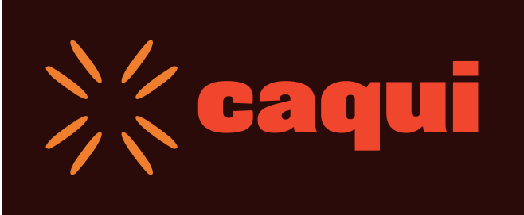

Sem invenção
Modelo de linguagem nunca escreve prazo, taxa ou valor.

O atendimento que responde antes de a pessoa perguntar.
Renan Chaves, Hands On com IA da Avenue, 31/10/2026
A Caqui Invest é uma corretora fictícia, e todos os dados são sintéticos.
Modelo de linguagem nunca escreve prazo, taxa ou valor.
Toda resposta factual cita o artigo da base ou o dado da conta.
"Falar com uma pessoa" fica sempre visível no chat.
Só dados sintéticos, com CPF sempre mascarado no log.
É hipótese: as taxas de contenção e os 2 minutos salvos por contato ainda precisam de validação. O restante precisa vir de outras frentes.
"o rapaz da caqui disse que é só falar os 6 números" caía em "não entendi".
Percebi testando com frases novas. O próximo passo é um classificador, porque regra por palavra não generaliza.
Leitura do case, spec, código, testes e interface.
Escreveram os testes cegos sem acesso ao código.
Barra CPF sem máscara e chave de API.
40 respostas lidas, valores conferidos centavo a centavo e fluxo na tela.